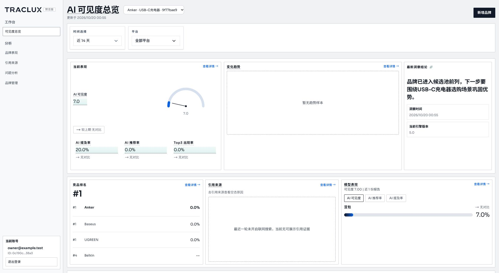

From a brand to questions worth testing.
输入品牌，生成探针，接入模型执行，在用户工作台查看结果。
Explore one captured Anker / USB-C charger run. This is a read-only case, not a live model request.
Inspect the actual probes · 点开看实际问题
Probe
Captured response · 回答摘录Model answer excerpt · 模型回答摘录
本轮未联网；模型原话未经事实核验，不是产品选购建议。主题匹配和分析展示仍有已知限制。
Run the full workbench · 运行完整系统
View source →The open-source package includes the existing Nuxt user application, Spring Boot backend, CSSM-HI generation, model execution, saved answers and run history. The author's operations console stays private.
git clone https://github.com/ZaneLau/traclux-probe.git cd traclux-probe python3 scripts/community_init.py # Privately configure MODEL_* in .env docker compose up --build -d
Open http://localhost:3100/login with the credentials generated in your local .env. Your model account supplies quota; this public demo makes no model calls.
The actual user workbench · 真实用户工作台
Captured from the self-hosted application using the same five-probe run. This screenshot shows the existing interface; rankings and summary wording have known early-release limitations.

Apache-2.0 · Community preview · Five responses verify the execution path, not algorithm superiority or brand ranking. Anker, UGREEN and Baseus are independent brands; no affiliation or endorsement is implied. Traclux website